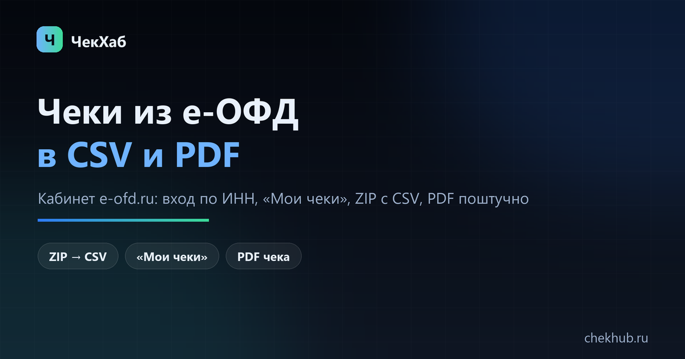

Как выгрузить чеки из е-ОФД в Excel (CSV) и PDF
В кабинете е-ОФД нет кнопки «экспорт в Excel» — есть «Выгрузить в файл», которая отдаёт ZIP с CSV. Ниже — как войти (логин — ИНН), где лежат чеки, как забрать реестр в Excel без «кракозябр», почему PDF скачивается только по одному чеку и как выдать доступ бухгалтеру.

Два места, где теряют время: выгрузка отдаёт архив с CSV, а не xlsx, и PDF в кабинете делается только по конкретному чеку. Реестр за период — это CSV с одной из трёх группировок, а не файл на печать.
Если разбираться некогда
от 1 500 ₽ за кассу за месяц; год и сеть считаем по количеству касс и месяцев. Срок 1–3 рабочих дня на небольшую сеть.
Гарантия: если ваш ОФД не отдаёт данные за нужный период — вернём предоплату.
Как выглядит результат: пример файла выгрузки (CSV, данные тестовые).
Кабинет е-ОФД: вход по ИНН и разделы
Личный кабинет — e-ofd.ru/lk/login (кнопка «Личный кабинет» в шапке сайта). Необычность, с которой спотыкаются почти все: логин — это ИНН организации или ИП, указанный при регистрации, а не e-mail и не название. Пароль при регистрации задаёт сам пользователь; требования оператора: не меньше 6 символов, обязательно буквы в обоих регистрах, цифры и спецсимволы. Забыли пароль — кнопка «Восстановление пароля»: вводите ИНН, отмечаете «Я не робот», и ссылка для сброса приходит на адрес электронной почты, указанный в профиле. Если почта в профиле — ящик бухгалтера, который уже уволился, письмо искать бесполезно: пароль меняют через поддержку оператора.
Сразу после входа открывается страница «Мои кассы». В шапке кабинета — баланс внутреннего счёта и кнопка «Пополнить»: в е-ОФД оплата идёт через внутренний счёт, и при нулевом балансе передача документов останавливается. Настройки ЛК — по кнопке в правом верхнем углу, там четыре вкладки: Профиль (данные организации, кроме ИНН, редактируются), Смена пароля, Пользователи и Группы пользователей.
Реквизиты оператора нужны, если касса только настраивается: ООО «ГРУППА ЭЛЕМЕНТ», ИНН 7729642175, сервер ОФД kkt.e-ofd.ru (176.122.30.30), порт 7777; для маркировки — сервер КМ crpt.e-ofd.ru, порт 5555. Тарифы на сайте: 1 299 ₽ за 12 месяцев и 3 299 ₽ за 36 месяцев, количество чеков не ограничено, отправка чека на e-mail покупателю бесплатна, на телефон — 10 ₽. Если в кассе стоит адрес другого оператора, в кабинете е-ОФД чеков не будет вообще.
Где лежат чеки: «Мои чеки» и карточка кассы
В кабинете два входа в один и тот же реестр, и разница важна:
- «Мои чеки» — сводный список по всем активным кассам сразу. Здесь же поиск, сортировка, фильтры, выгрузка и график статистики продаж за период.
- «Мои кассы» → название кассы — карточка одного аппарата: статус, общая информация, вкладка «ФИСКАЛЬНЫЕ ДОКУМЕНТЫ» со списком чеков этой кассы и статистика по ней.
Практическое правило: если нужен один аппарат — идите в карточку кассы, если нужен весь период по сети — в «Мои чеки», там фильтровать по кассе не придётся. Сортировка в обоих списках — по клику на заголовок столбца: дата документа, номер чека, тип чека, номер смены, сумма; в «Моих чеках» дополнительно можно сортировать по названию кассы и адресу её установки.
Фильтры — главный инструмент, если период большой. Есть три способа сузить выборку:
- По дате — конкретный день или диапазон; после выбора нужно нажать кнопку поиска, иначе список останется прежним.
- По типу документа — десять вариантов: отчёт о регистрации, отчёт об открытии смены, кассовый чек, бланк строгой отчётности, отчёт о закрытии смены, отчёт о закрытии фискального накопителя, отчёт об изменении параметров регистрации, отчёт о текущем состоянии расчётов, кассовый чек коррекции, БСО коррекции.
- По значению — название ККТ, регистрационный номер ККТ, номер смены, номер чека, сумма чека, сумма наличными, сумма безналичными, номер ФПД, номер ФН. По умолчанию поиск идёт сразу по всем этим полям, различать их нужно, только если значений несколько.
Ловушка: фильтры не сбрасываются сами. Если вам показывают «нет документов», а касса точно работала, — сначала нажмите сброс фильтра, потом ищите проблему на кассе. Вторая по частоте причина пустого списка — выбранный тип документа: в реестре лежат не только кассовые чеки, но и отчёты о сменах, поэтому при фильтре «только кассовые чеки» отчётов в выгрузке не будет.
Выгрузка в файл: ZIP с CSV, три варианта группировки
Кнопка называется «Выгрузить в файл» и стоит над списком: в «Моих чеках» — над блоком фильтров, в карточке кассы — в разделе «Список чеков». Логика одинаковая: выгружается то, что сейчас в списке, то есть сначала фильтры, потом выгрузка. Выгрузить все чеки кассы, не трогая фильтры, тоже можно — но на большой истории это долго.
После нажатия открывается окно с выбором способа выгрузки, и это ключевой выбор:
- «Список документов» — построчный реестр фискальных документов: по строке на чек или отчёт. Базовый вариант для Excel и сверки.
- «Группировка сумм по датам» — суммы, свёрнутые по дням. Для сверки выручки с банком и кассовой книгой.
- «Группировка по сменам» — суммы по сменам, для Z-отчётов и контроля кассиров.
Дальше — кнопка «Выгрузить», и на компьютер скачивается архив *.zip, а внутри — файл *.csv. Это не xlsx: отдельного «экспорта в Excel» в кабинете нет, и это главное расхождение ожиданий и реальности. Ограничений по количеству касс и длине периода в инструкции ЛК не описано — в отличие от некоторых операторов, где на ПК не выгрузить больше 10 касс или 62 дней. Но большой период всё равно лучше резать по месяцам: файл проще сверить, а при сбое не терять всю выгрузку.
CSV в Excel: три шага, чтобы суммы не превратились в текст
- Распакуйте архив. Excel не откроет csv внутри zip — сначала извлеките файл.
- Открывайте через «Данные» → «Из текста/CSV», а не двойным щелчком. При двойном щелчке Excel берёт системный разделитель, и вся строка падает в одну колонку.
- Проверьте кодировку и разделитель. Если вместо русских букв «кракозябры» — переключите кодировку (UTF-8 / Windows-1251), если все данные в одной колонке — поставьте разделитель «точка с запятой».
Дальше два обычных сюрприза. Суммы приходят с точкой как десятичным разделителем и могут определиться как текст — приведите колонку к числу через «Найти и заменить» (точка → запятая) или формулой. Дата и время в выгрузке — по времени кассы, поэтому чеки около полуночи на границе месяца дают «лишний» день в одном из файлов, а склейка двух месяцев по дате даёт дубли и пропуски.
Склеивать файлы нужно по ключу ФН + ФД + ФПД, а не по сумме и дате: два чека на одну сумму в одну минуту — обычное дело в рознице. Расшифровка этих реквизитов — в глоссарии ФФД.
PDF: только по одному чеку
PDF в кабинете есть, но не там, где его ищут. Кнопки «выгрузить всё в PDF» нет: CSV-архив — это реестр, а PDF делается по конкретному документу. Порядок такой:
- В списке чеков нажмите на номер чека — откроется всплывающее окно с изображением документа: состав расчёта, суммы, реквизиты ККТ и ФН, смена, кассир.
- Нажмите «Скачать» — чек сохранится на компьютер в формате *.pdf.
- Нужна копия покупателю — в том же окне введите телефон или e-mail и нажмите «Отправить»: документ уйдёт адресату, а история отправок останется в кабинете.
Отсюда простая арифметика: 10 чеков — 10 кликов, а период в пять месяцев при 300 чеках в месяц превращается в полторы тысячи открытых окон. Поэтому PDF берут точечно — спорный чек, запрос покупателя, приложение к акту, — а для сверки и бухгалтерии используют CSV.
Есть и третий путь: PDF со всеми чеками за период собирается автоматизацией кабинета — по той же схеме, по которой мы делаем это у других операторов. Что входит и сколько стоит — на странице услуг; выгрузка реестра начинается от 1 500 ₽ за кассу за месяц.
Как дать доступ бухгалтеру и не отдать лишнего
Пользователей создаёт только тот, у кого есть права администрирования: Настройки ЛК → вкладка «Пользователи». В списке видно наименование и почту, группу прав и логин. Логин не придумывают — его генерирует система при добавлении пользователя, и именно он вместе с паролем нужен для входа. Наборы прав задаются в отдельной вкладке «Группы пользователей»: «только просмотр чеков» — это отдельная группа, а не галочка.
Практика для выгрузки: владельческий аккаунт не отдавайте. Создайте отдельного пользователя с правом просмотра чеков, а после работы смените ему пароль или отключите. Если подрядчик просит доступ к кабинету — это нормальный запрос, и решается он так же.
Есть ли API: что описано, а что нет
В инструкции ЛК е-ОФД программный интерфейс описан только для арендованной облачной кассы: в её карточке есть кнопка «ИНТЕГРАЦИЯ» со страницей API MicroPay и файлом инструкции, плюс готовый модуль для Opencart. Это API пробития чеков интернет-магазином, а не чтения архива. Публичного API «отдай все чеки за период» в документации оператора нет.
Значит, регулярная выгрузка делается тремя способами: руками по месяцам, автоматизацией кабинета (вход, фильтры, «Выгрузить в файл», скачивание архива) или запросом в поддержку под вашу задачу. Первый вариант бесплатный и утомительный, второй окупается, когда выгрузка нужна чаще раза в месяц.
Если чеков в кабинете нет: чек-лист
- Касса не передаёт документы. Проверьте адрес и порт ОФД (
kkt.e-ofd.ru, порт 7777), связь кассы и статус услуги — без передачи чеков кабинет пуст. - Баланс внутреннего счёта. При нулевом балансе передача останавливается; текущий баланс и кнопка «Пополнить» — в шапке кабинета.
- Фильтры. Не сброшены дата, тип документа или значение из прошлого поиска — самая частая причина «пустого» списка.
- Другой оператор. Проверьте РН ККТ и ИНН: если накопитель ведёт не е-ОФД, чеков здесь не будет. При смене ОФД архив за прошлые периоды не переезжает — его запрашивают у прежнего оператора.
- Отложенная передача. Касса без связи копит документы в фискальном накопителе и отправляет их позже — данные «за сегодня» в кабинете неполные.
Готовые формулировки для обращения — письмо в ОФД. Разборы соседних операторов: Яндекс ОФД, Платформа ОФД, Такском, Первый ОФД, Астрал ОФД, Saby (СБИС) ОФД.
Частые вопросы
Как войти в личный кабинет е-ОФД?
Адрес — e-ofd.ru/lk/login, логин — ИНН организации или ИП, указанный при регистрации, пароль — тот, что задали сами. Если пароль забыт, нажмите «Восстановление пароля», введите ИНН и отметьте «Я не робот»: ссылка для сброса придёт на e-mail из профиля.
Как выгрузить чеки из е-ОФД в Excel?
Отдельного экспорта в xlsx нет. В разделе «Мои чеки» или в карточке кассы на вкладке «ФИСКАЛЬНЫЕ ДОКУМЕНТЫ» нажмите «Выгрузить в файл», выберите способ (список документов, группировка сумм по датам, группировка по сменам) и нажмите «Выгрузить» — скачается ZIP с CSV внутри. В Excel открывайте через «Данные → Из текста/CSV», указав разделитель и кодировку.
Почему вместо таблицы скачивается архив?
Так устроена выгрузка: кабинет отдаёт ZIP, внутри которого лежит файл CSV. Его нужно распаковать и открыть в Excel через импорт — при двойном щелчке все данные окажутся в одной колонке.
Как скачать чек в PDF?
Нажмите на номер чека в списке — откроется окно с изображением документа, кнопка «Скачать» сохраняет чек в PDF. Массовой выгрузки в PDF в кабинете нет: файл формируется по одному чеку.
Есть ли ограничения по периоду и количеству касс?
В инструкции личного кабинета ограничений не описано — выгружается то, что выбрано фильтрами. На практике большой период лучше делить по месяцам: файл проще сверить, а при сбое не теряется вся выгрузка.
Почему в выгрузке нет позиций товаров?
В реестр попадают фискальные документы с суммами и реквизитами; состав расчёта (наименования, количество, НДС) виден в самом чеке — в окне просмотра и в PDF. Если нужны позиции строками в таблице, их собирают из карточек чеков — это отдельная задача автоматизации.
Как дать доступ бухгалтеру?
В настройках ЛК (кнопка в правом верхнем углу) → вкладка «Пользователи» → создать пользователя и выбрать группу прав. Логин генерирует система, пароль задаётся при создании. Владельческий аккаунт отдавать не нужно: для выгрузки достаточно прав просмотра чеков.
Есть ли у е-ОФД API для выгрузки чеков?
В инструкции описан только API арендованной облачной кассы (MicroPay) — для пробития чеков интернет-магазином, кнопка «ИНТЕГРАЦИЯ» в карточке арендованной кассы. Публичного API для чтения архива чеков в документации нет.
Почему в кабинете нет чеков?
Проверьте по порядку: касса передаёт документы на kkt.e-ofd.ru, порт 7777; баланс внутреннего счёта не нулевой; фильтры по дате и типу сброшены; касса обслуживается именно в е-ОФД (РН ККТ и ИНН). При смене оператора архив за прошлые периоды остаётся у прежнего ОФД.